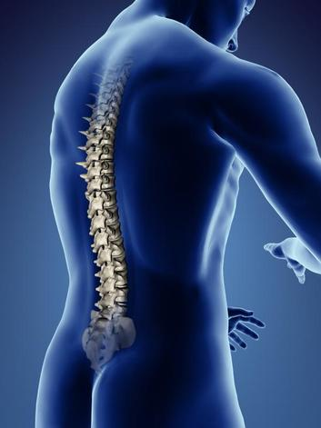

मेरुरज्जु

मेरुरज्जु अधिकांश जीव जंतुओं के शरीर का आवश्यक अंग हैं। इस लेख में मानव शरीर से संबंधित उल्लेख है। मस्तिष्क का पिछला भाग लम्बा होकर खोपड़ी के पश्च छोर पर उपस्थित महारन्ध से निकलकर रीढ़ की हड्डी तक फैला रहता है। इसे मेरुरज्जु या सुषुम्ना कहते हैं। यह कशेरुकाओं के मध्य उपस्थित तन्त्रिकीय नाल में सुरक्षित रहता है। यह मस्तिष्के के समान द्रढ़ तानिका तथा मृदुतानिका से घिरा रहता है। मेरुरज्जु के मध्य भाग में एक संकरी केन्द्रीय नाल होती है। केन्द्रीय नाल के चारों ओर मेरुरज्जु की मोटी दीवार में दो स्तर होते हैं।
- भीतरी स्तर को धूसर द्रव्य
- बाहरी स्तर को श्वेत द्रव्य कहते हैं।
धूसर द्रव्य में श्रंग तथा अधर श्रंग पाए जाते हैं। इसके चारों ओर मज्जावृत तन्त्रिका कोशिकाओं से बना होता है।
मेरुरज्जु के कार्य
इस प्रकार सम्मिलित रूप में मेरुरज्जु के दो प्रकार के कार्य होते हैं-
- मस्तिष्क से प्राप्त तथा मस्तिष्क को जाने वाले आवेगों के लिए मेरुरज्जु पथ प्रदान करता है।
- प्रतिवर्ती क्रियाओं का संचालन एवं नियमन करने का कार्य मेरुरज्जु का ही है।